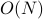
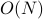
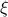
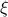

Summary and Interpretation
Let's review what we've learned from the mean-field solution to the Ising Model.
We began by applying the a variational ansatz of a non-interacting spins to the full interacting Ising model.
We guessed a trial Hamiltonian of the form , where the
 are our ‘‘guessing parameters’’ in the trial Hamiltonian that we can fiddle around. Physically, we can interpret the as an ‘‘effective magnetic field’’ felt by the
are our ‘‘guessing parameters’’ in the trial Hamiltonian that we can fiddle around. Physically, we can interpret the as an ‘‘effective magnetic field’’ felt by the  'th spin.
'th spin.Then, we found the ‘‘best’’ value of
by minimizing the variational free energy with respect to the 's. In our solution we assumed that the was the same for all sites (a uniform order parameter). Under this condition, had a solution given by the self-consistency relation
Remarkably, the nature of the solutions for
 depend on the temperature! When we set
depend on the temperature! When we set  ,
,At high temperatures
 ,
,  is the only solution, meaning that there's no net magnetization.
is the only solution, meaning that there's no net magnetization.At low temperatures
 , there exists a nonzero solution at
, there exists a nonzero solution at  , meaning that the Ising model picks up a net magnetization (the spins tend to point in some particular direction) EVEN in the absence of an external field.
, meaning that the Ising model picks up a net magnetization (the spins tend to point in some particular direction) EVEN in the absence of an external field. (Even though
is still a solution, it represents an unstable free energy maximum, rather than a minimum. Hopefully we'll discuss this…)
These two qualitatively (and quantitatively!) different phases are separated by the critical temperature
 , which we can find by setting the slopes of both sides of the self-consistency equation equal to each other at .
, which we can find by setting the slopes of both sides of the self-consistency equation equal to each other at .When the temperature crosses
, the Ising model undergoes a continuous phase transition from the high-temperature disordered phase to the low-temperature ordered phase.We call this phase transition continuous because the free energy is continuous here. Its derivatives aren't continuous, though; in particular, its second derivative (the magnetic susceptibility) diverges as we appraoch the critical point. (Hopefully we'll discuss this in class soon)
The exact behavior of these divergences are governed by critical exponents, which we'll hopefully cover later in the class as well.
Interpreting the Mean-Field Solution
The optimized value of has a very nice and particular physical interpretation! Let me write down the self-consistency expression again:
The LHS is easy to interpret: it's the ‘‘effective magnetic field’’ felt by some spin in the lattice under the trial Hamiltonian. In other words, it's the value of the magnetic field that we pretend each spin experiences when we write down the trial Hamiltonian.
The RHS is the mean field experienced by spin , and our self-consistency relation says that there's two contributions to the mean field: one is the external field  applied to all the spins in the model, and the other is the mean field from all of 's neighbors. To see why this is true, rewrite the RHS as
applied to all the spins in the model, and the other is the mean field from all of 's neighbors. To see why this is true, rewrite the RHS as
where is the average magnetization of a trial-Hamiltonian-spin. Here represents the average magnetic field created by a spin with average magnetization  . If you are surrounded by
. If you are surrounded by  nearest neighbors, and you feel a field of from each of your neighbors, then you feel a total field of from your neighbors.
nearest neighbors, and you feel a field of from each of your neighbors, then you feel a total field of from your neighbors.
So the self-consistency relation tells you that:
In the trial Hamiltonian, we pretend that each spin experiences an ‘‘effective’’ magnetic field , resulting from the external field as well as the field set up by perfectly-average-neighbors. (In reality, though, neighbors aren't always perfectly average…)
Notice that the average magnetization of these neighbors is in determined by the effective value of the field …which is must be determined by the average magnetization …so it's a self-consistent sort of relation: the mean field is exactly the right strength to induce a magnetization that produces exactly that same mean field. (Think about it.) Trippy.
Is mean field theory accurate?
From the interpretation above, we've learned that mean field theory does successfully introduce interactions, but in a rather peculiar and naive way: rather than assuming that each spin actually interacts with its neighbors, it assumes that each spin interacts with an abstract ‘‘super-neighbor’’ that behaves like a perfectly averaged mean magnetization of the entire material.
In reality, of course, the neighbors of any particular spin don't behave perfectly like their ideal-average-magnetization-super-neighbor; rather, they're all jiggling around from thermal energy all the time, which means that the actual field experienced by any particular spin will fluctuate over time. For instance, one particular spin could be very unlucky, and 5 out of its 6 neighbors might all happen to point upwards – and then the field that it actually feels will be much more ‘‘up’’ than the material's mean field.
So the main drawback to mean field theory is that it does not properly account for fluctuations in the micro-environment (is that even the right word?) around any particular spin.
Washing out fluctuations with high dimension
Well, if fluctuations are the nail-in-the-shoe that ruin the validity of mean field theory, we should expect that the less fluctuations there are in a particular site's mean-field, the more accurate mean field theory is. And as we remember from statistics, the more things we average over, the less the average is going to fluctuate around the mean. Let me say that again in a box:
The more things you average over, the less it fluctuates around the mean.
(To be more precise, the standard deviation of the average of lots of  independent random variables goes like . The reason is that their variances add up linearly as , and we take a square root to get the standard deviation of the sum as , and then we divide by to get the std.dev. of the average as . It's always nice to review your stats…)
independent random variables goes like . The reason is that their variances add up linearly as , and we take a square root to get the standard deviation of the sum as , and then we divide by to get the std.dev. of the average as . It's always nice to review your stats…)
What this means for us is that the more neighbors you interact with, the closer mean field theory lies to the truth. Typically, what this means is that the dimensionality  of your system has to be high enough, because the number of neighbors scales with . So the higher the dimensionality, the more accurate the mean field, and in fact, above a certain upper critical dimension, the results of mean field theory become exact. (Or so I've heard. I haven't actually understood the proof of this yet…)
of your system has to be high enough, because the number of neighbors scales with . So the higher the dimensionality, the more accurate the mean field, and in fact, above a certain upper critical dimension, the results of mean field theory become exact. (Or so I've heard. I haven't actually understood the proof of this yet…)
Mean Field Theory fails in 1D
As an example of how poorly mean-field theory can behave, let's consider again the 1D Ising model, which we found the exact solution for last week. There, we figured out that the magnetization stays at  all the way down to zero temperature. In other words, there is no phase transition in the 1D Ising model. On the other hand, if you treat the 1D Ising model with the mean-field approach, it will predict that the magnetization becomes nonzero once the temperature is cold enough ()! This is clearly an incorrect prediction of mean-field theory.
all the way down to zero temperature. In other words, there is no phase transition in the 1D Ising model. On the other hand, if you treat the 1D Ising model with the mean-field approach, it will predict that the magnetization becomes nonzero once the temperature is cold enough ()! This is clearly an incorrect prediction of mean-field theory.
Well, if we think back to the average-over-neighbors picture, we shouldn't really be too surprised that mean field theory is pretty shitty in one dimension. Since each site only has two neighbors, there really isn't much of a ‘‘mean’’ field to be talking about: either both of the neighbors are up, or both are down, or one up one down….
Another ‘‘issue’’ common to all mean-field theories is taht they incorrectly predict the correlations between spins. Remember that in the exact 1D Ising model solution, we found that there was a correlation between nearby spins, where if a particular spin  happened to point up, then a nearby spin would probably point up as well (for ). More precisely, the 2-site correlation was given by , which decays exponentially with a characteristic lengthscale  as the distance between the spins increased.
happened to point up, then a nearby spin would probably point up as well (for ). More precisely, the 2-site correlation was given by , which decays exponentially with a characteristic lengthscale  as the distance between the spins increased.
On the other hand, mean field theory fails to predict this behavior, because the trial Hamiltonian has a non-interactig form where each of the spins lives in its own energetically isolated world…and remember that there can be no correlations without interaction terms in the Hamiltonian, because the partition function just factorizes.
Takeaway
In summary, we've learned that Mean field theory is better in high dimensions, because you have more neighbors to average over.
To address some of the concerns of mean field theory, we will go over a more advanced theory, called Landau-Ginzburg theory, in the coming weeks. Click here to begin!